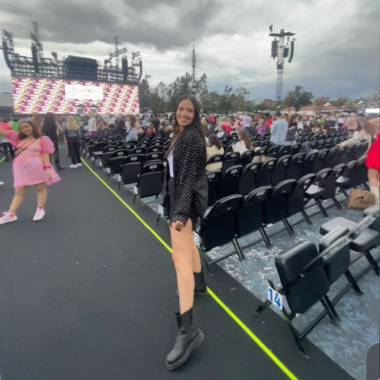
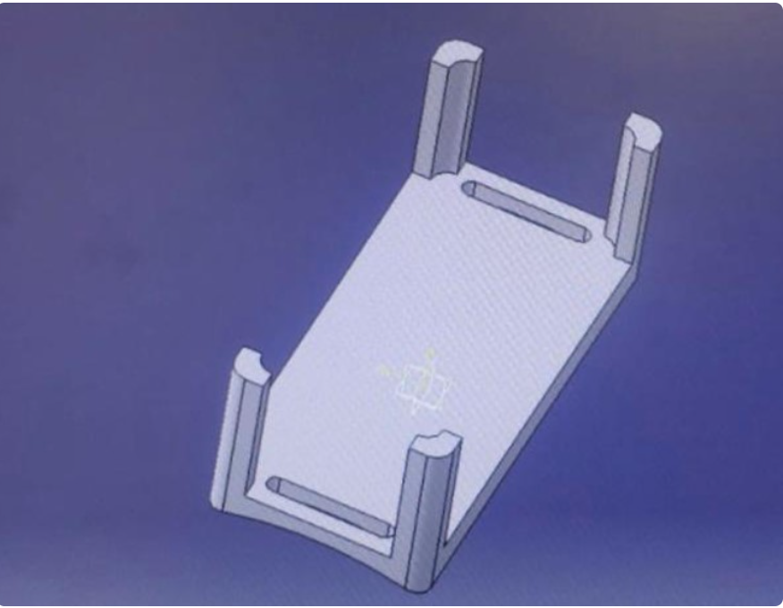
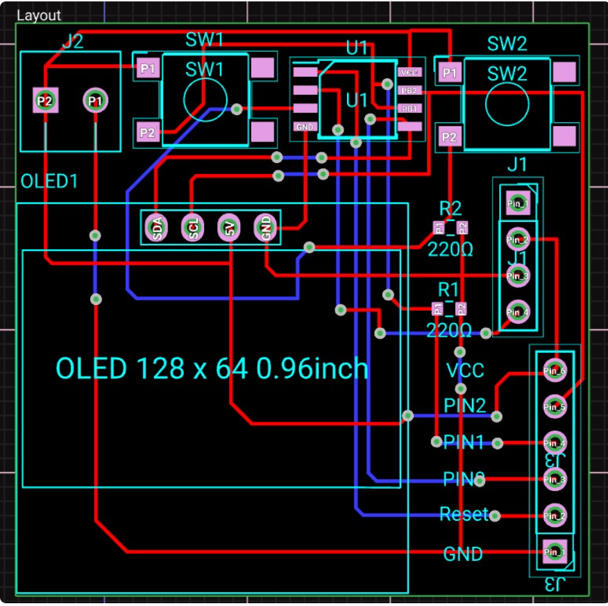

Portafolio de Actividades
Laboratorio de elementos programables
Departamento de Ciencias e Ingenierías | Universidad Iberoamericana Puebla, México.
Proyecto final: Wearable

- Resumen -
Para este proyecto decidimos crear un wearable para ayudar a las personas que trabajan en la cocina, por eso diseñamos un dispositivo capaz de medir la distancia entre el personal de la cocina, temperatura y gas dentro de ese espacio para reducir el riesgo de colisiones, quemaduras o accidentes.
- Introducción -
Los wearables son dispositivos electrónicos que se llevan en el cuerpo. Estos dispositivos pueden adoptar diferentes formas, incluidos dispositivos médicos, ropa y más. Estos dispositivos suelen incluir sensores, procesadores y capacidades de comunicación que monitorean, analizan y transmiten datos personales.
Hay diferentes dispositivos portátiles: dispositivos simples como pulseras de fitness que miden los pasos y la tasa de odio, y también hay dispositivos complejos, por ejemplo, relojes inteligentes.
El diseño y uso de los wearables pueden cambiar según su finalidad. Hay dispositivos portátiles que se centran en actividades de salud o fitness, mientras que otros se centran más en las capacidades de comunicación y pueden incluir funciones de inteligencia artificial. La mayoría de los wearables recopilan y analizan datos en tiempo real (niveles de actividad, datos biométricos, etc.) que proporcionan información para generar un resumen de la persona que lleva el dispositivo.
- Materiales -
Arduino Uno, Jumpers, Protoboard, Attiny, ∙ Sensores: MQ-2 (gas sensor) DHT11 (temperature and humidity sensor) ARD-350 (ultrasonic sensor), leds, pantalla OLED, push buttons, resistencias.
- Desarrollo -
De principio, comprobamos el funcionamiento de cada sensor y programamos su respectivo código, una vez que cada sensor funciono individualmente, procedimos a juntarlo en el mismo attiny 85 y la oled. Después nos enfocamos en realizar un diseño que fuera práctico y ergonómico para su uso. Una vez que teníamos nuestro diseño terminado, realizamos el PCB y las soldaduras necesarias para cada sensor y comprobar su funcionamiento de nuevo.
Sensor ultrasonico
Código y funcionamiento

Video
Sensor de gas
Código y funcionamiento

Video
Sensor de gas con ultrasonico
Código y funcionamiento
Video
Sensor de temperatura
Código y funcionamiento
El código del sensor de temperatura está programado junto con la pantalla OLED, y en donde se imprime la temperatura en grados Celsius y cuenta con un menú que permite ir a dos opciones: 1. Información de temperatura

Video
Diseño en CATIA

Diseño del PCB
El diseño de cada PCB se realizó en la página web de FLUX
PCB para la pantalla OLED y sensor de temperatura
PCB para sensor de gas y sensor ultrasonico

- Resultados -
A continuación se muestran los resultados de los PCB soldados con cada uno de los sensores ya programados y colocados en nuestro diseño de CATIA impreso en 3d.

- Conclusiones -
El proyecto de wearable representa una combinación exitosa de innovación tecnológica y diseño funcional. Con la finalización de este proyecto, se sientan las bases para un futuro prometedor en el ámbito de la tecnología vestible, y se anticipa que el dispositivo tendrá un impacto positivo en la vida de los usuarios.
- Referencias -
Tinkercad | From mind to design in minutes: Curso de Arduino Básico, (Clases) Rafael P., Universidad Iberoamericana Puebla, 2023.